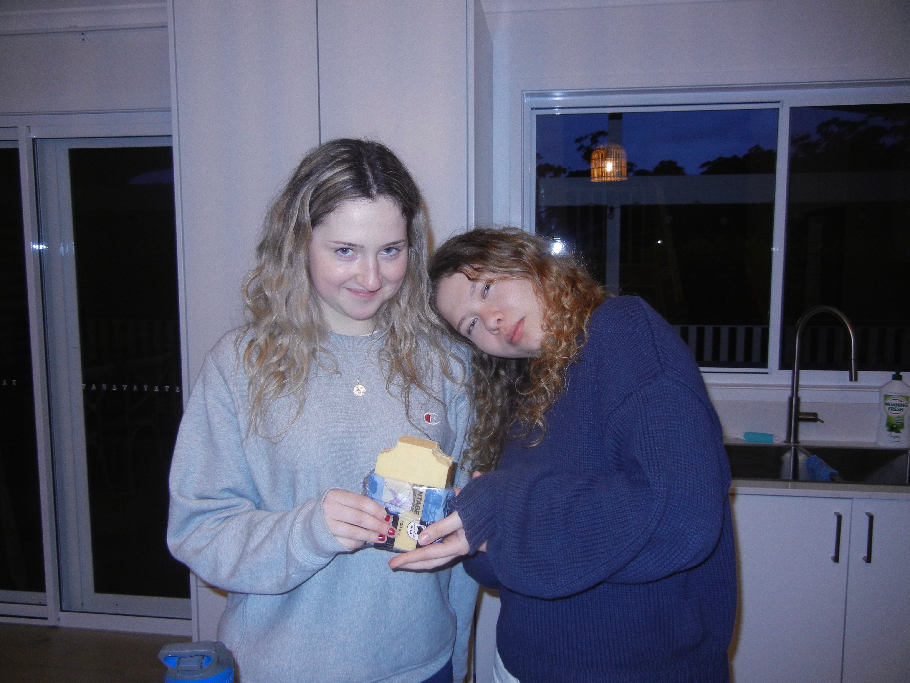
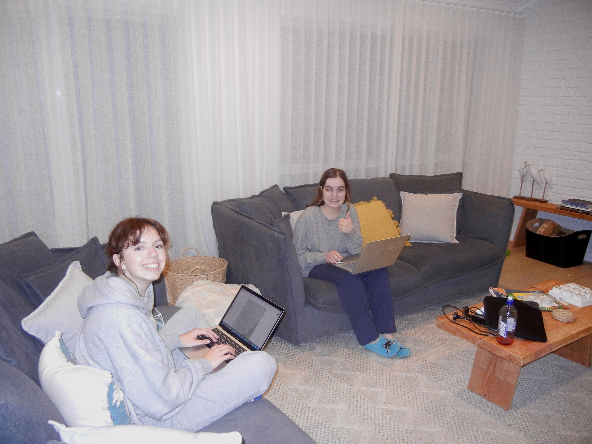

Happy birthday to one of my best friends, @.CleoFielder42. Missing you extra today <3
Sick of people telling me to try Memteramine. “It’s a shame, you forget so much” no I don’t???? Sorry YOU’RE used to remembering everything, but it doesn’t bother me that I sometimes forget what I need when I’m shopping. It’s ok that I can’t perfectly recall my trip to the beach. Mind your own business.
When did the impermanence of memory become something we were so desperate to overcome? Does ephemerality not make something more valuable?
Lowkey couldn’t have gotten my degree without Memteramine…
THIS!! I get that the ODs are bad, but for those of us using it properly, it’s a lifesaver
CONGRATS KATIEEEE!!! Gonna miss our Memteramine study sessions… At least I know I’ll never forget them <3
The Australian Government is ramping up their efforts to subdue the “Memteramine Plague”, enacting several protective measures to fight against the rise in Memteramine-related overdoses. These new measures include tightening restrictions for receiving Memteramine prescriptions, and the development of numerous Memteramine safe-use sites in libraries, staffed with medical personnel.
Hoping other governments see this and feel inspired
It's about damn time!
Got leftover Memteramine from finals, now I’m itching to learn another new language. Any suggestions?
Romanian! Or Latin!
Japanese?
say cheese! never gonna forget this weekend! (literally, thanks memteramine) @ClancyDurand

Love u babes, ik we just got back but I NEED another getaway ASAP!!! Memories only keep u entertained for so long!
Not the cheese block lol
Mid-holiday Memteramine study session :) the grind never stops!!
My fave nerds <3
love u dorks !!
Consult your GP about getting a Memteramine prescription to BOOST your memory and make learning infinitely easier! Memteramine chemically enhances neurogenesis and streamlines the memory-encoding process. Decades of research into memory medications for those suffering from Alzheimer’s or dementia have led to this moment, where our knowledge of cholinesterase inhibitors and glutamate regulators has become so advanced, we can help ANYONE boost their memory-making functions!
For those wondering, neurogenesis is the creation of new neurons, which are used in encoding memories. Cholinesterase inhibitors prevent the breakdown of a chemical messenger important for memory and learning, and glutamate helps the brain process information. ALWAYS do your own research!